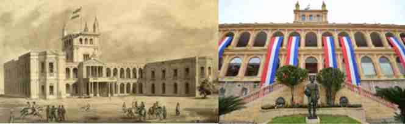

Lázaro Rojas, gave his godson, Francisco Solano López, two hectares of land on the coast of the Paraguay River, over the years and acceding to the presidency of Paraguay, he prepared his residence on that site. The Paraguay of that time received great professionals in engineering and architecture.
In 1867 the residence of Marshal López was almost finished. The war also caused the enemies to point their cannons at the building, suffering considerable damage that would remain immortalized in the first photographs of the 19th Century War. In 1869 the occupation of Asunción and looting began. Converted from that moment into a Brazilian barracks, until the end of the occupation in 1876. In 1890 its reconstruction began, and it was inaugurated in 1892, becoming the seat of the Paraguayan government.
Lopez Palace. It is bounded by El Paraguayo Independiente Avenue, and Ayolas and Juan E. O'Leary streets.
The first plans were drawn up by Ing. Francisco Wissner de Morgensten of Hungarian nationality, hired by President Don Carlos Antonio López. In 1857 work began under the direction of Arch. Alonso Taylor of English nationality. Some historians affirm that it was carried out by Alejandro Ravizza (1861). In 1864 the building was under construction when the War against the Triple Alliance began; General Francisco Solano López had to leave Asunción without being able to inaugurate his future residence, the Palace was practically finished in 1867. In 1869 the Allied invasion of Asunción took place and looting began, the Palace, which had previously suffered considerable damage from the shot by an allied cannonball, it became a Brazilian barracks with the invasion until the end of the occupation in 1876. The decorations were confiscated and transferred to Brazil. Much of the appropriate personal property has yet to be recovered. After the withdrawal of the Brazilian troops, the Palace was abandoned until the resumption of work in 1890. On October 12, 1892, it was enabled during the presidency of Juan Gualberto González.
The Palace was used as the government seat since 1894, it was the presidential residence until the 40s of the last century.
A new cultural pattern is gradually introduced that is characterized as a transition towards classicism, with the introduction of new materials such as: iron, granite and marble, all imported. The concept of Facade Architecture begins, also the concept of: "Monumental Architecture".
The Architectural plan in U, allows to observe two frontal facades: facade on the Avenida el Paraguayo Independiente and Coastal Facade that looks towards the Paraguay River.
In 2011 the original color of the main facades was recovered. Inside the building, the mural paintings, the movable property and the coastal area were recovered.